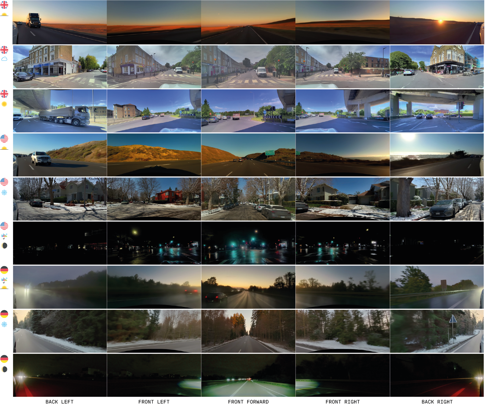
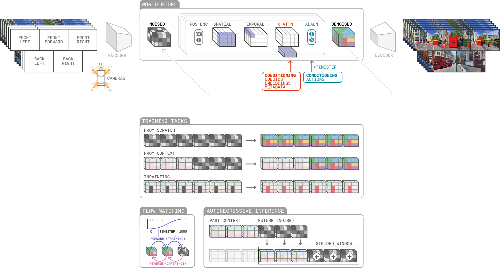
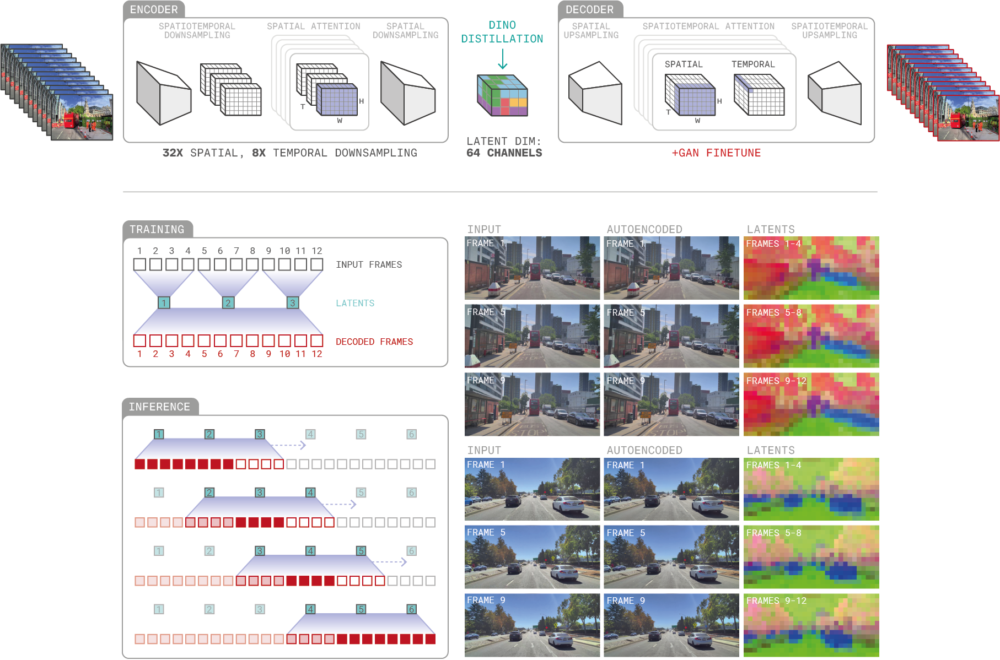
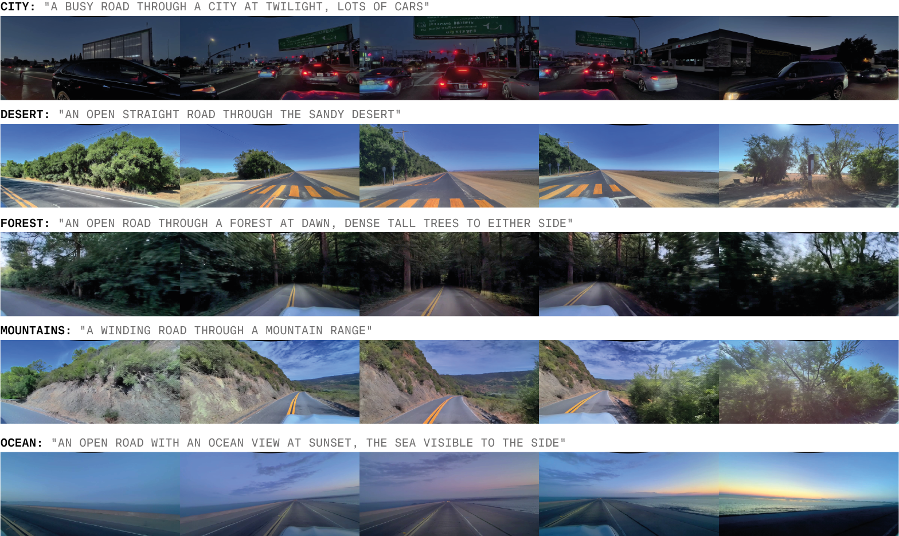
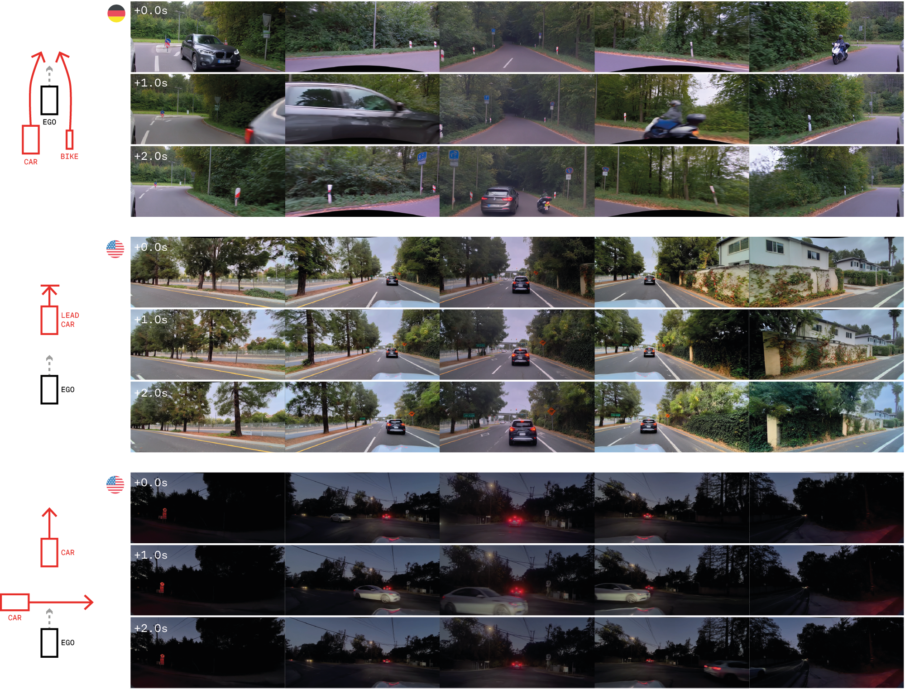
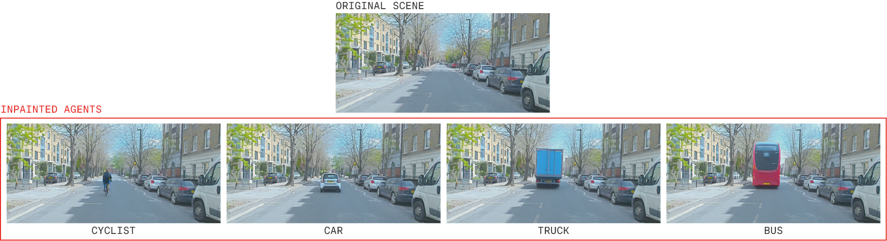
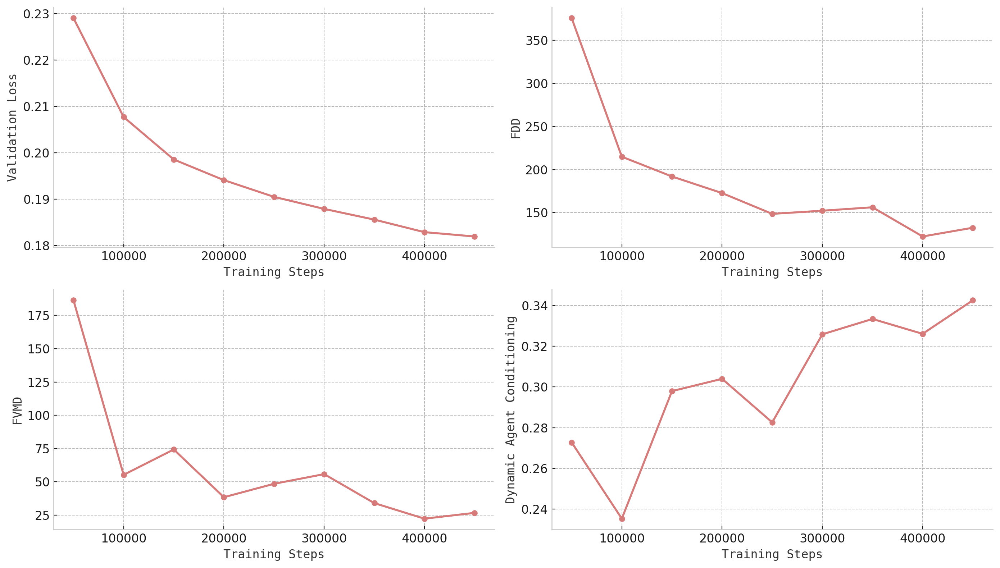

GAIA-2：自動運転のための制御可能なマルチビュー生成ワールドモデル
本論文は、自動運転シミュレーションのための潜在拡散ワールドモデル「GAIA-2」を紹介します。エゴ車両のダイナミクス、エージェント設定、環境条件、道路意味情報といった構造化された入力を受け取り、高解像度・時空間的に一貫したマルチカメラ映像を生成します。英国・米国・ドイツという複数の地理的地域にまたがり、一般的なシナリオから稀有な危険シナリオまで、スケーラブルなシミュレーションを実現します。

図1. GAIA-2によるゼロから生成された多様な運転シナリオ。複数の国、天候条件、時刻、道路レイアウトをカバーしている。
著者
Lloyd Russell, Anthony Hu, Lorenzo Bertoni, George Fedoseev, Jamie Shotton, Elahe Arani, Gianluca Corrado（Wayve）
アブストラクト
本論文では、自動運転アプリケーション向けに特化して設計された潜在拡散ワールドモデル、GAIA-2を提案する。提案システムは、エゴ車両のダイナミクス・エージェント設定・環境条件・道路意味情報といった構造化された入力を受け取り、高解像度・時空間的に一貫したマルチカメラ映像シーケンスを生成する。
GAIA-2は最大5カメラストリームを最大448×960解像度で扱い、以下の豊富な条件付けパラメータをサポートする：車両のキネマティクス、地理的地域、天候、道路特徴、動的エージェント制御。英国・米国・ドイツの多様な地理的地域にわたり動作し、一般的なシナリオから稀有な危険シナリオまでスケーラブルなシミュレーションを可能にする。
また、自動運転モデルからの外部潜在埋め込みの統合もサポートし、リアルシーンの編集・強化のための柔軟な推論モードを提供することで、実世界データの限界と、堅牢なAI運転モデルの訓練・評価に対する増大する需要とのギャップを埋める。
1. はじめに
自動運転システムの開発において、シミュレーションは安全性評価や稀有シナリオのテストに不可欠である。しかし、汎用的なビデオ生成モデルは視覚的な美しさやドメイン非依存な生成を重視しており、シーン要素やエージェント行動の構造化された制御には対応していないため、安全性が求められる自動運転アプリケーションには不適切である。
自動運転システムには、車両ダイナミクス・マルチエージェントインタラクション・道路意味情報・マルチカメラ一貫性といったドメイン固有の側面への細粒度な制御が必要である。既存のアプローチはこれらの要件を部分的にしか満たしていない。
GAIA-2は前身のGAIA-1を大きく前進させた。GAIA-1ではテキストとエゴアクション条件付けに離散変数を使用していたが、GAIA-2では連続潜在空間と包括的な条件付けを採用し、英国・米国・ドイツという実際の走行環境にわたるリアリスティックなシナリオ合成を実現している。
GAIA-2の主な貢献は以下の通りである：
- マルチカメラ一貫性： 最大5カメラストリームの時空間的に一貫した高解像度生成
- 豊富な条件付け： エゴ車両アクション、動的エージェント（3D bounding box）、シーンメタデータ、CLIPテキスト埋め込み、自動運転モデルからのシナリオ埋め込みによる制御
- 柔軟な推論モード： スクラッチからの生成、自己回帰予測、時空間インペインティング、シーン編集
- スケーラブルなシミュレーション： 一般的シナリオから稀有な危険シナリオまでをカバー
- 外部潜在空間の統合： CLIPや自動運転固有モデルの埋め込みのサポート
2. モデル
GAIA-2は2つの主要コンポーネントから構成される：ビデオトークナイザーと潜在ワールドモデルである。

図2. GAIA-2のアーキテクチャ概略図。ビデオトークナイザーのエンコード、潜在補間、Transformerによるノイズ除去・デコードのパイプラインと各タスク例を示す。
2.1 ビデオトークナイザー
ビデオトークナイザーは動画を連続潜在空間に圧縮する非対称エンコーダ・デコーダアーキテクチャである。

図3. ビデオトークナイザーの設計。時空間ダウンサンプリングと潜在表現の可視化（意味的安定性を示す）。
エンコーダ
エンコーダは時空間分解Transformerを用い、空間方向32倍・時間方向8倍のダウンサンプリングを64次元の潜在表現で実現する。これにより総圧縮率は約384倍となる。
デコーダ
デコーダは一貫性のある完全フレーム映像を再構成するため、時間的コンテキストを活用して潜在表現からビデオフレームを復元する。
学習損失
ビデオトークナイザーは以下の複合損失で学習される：
- L1/L2ピクセル再構成損失
- DINOによる特徴蒸留損失
- KLダイバージェンス正則化
- LPIPS知覚的損失
- GANに基づく敵対的損失
2.2 ワールドモデル
ワールドモデルは84億パラメータの時空間分解Transformerであり、フローマッチング（flow matching）で学習される。22個のTransformerブロックで構成され、アクション条件付けにはAdaptive Layer Normalization（AdaLN）、その他の変数にはクロスアテンションを採用する。位置エンコーディングは空間位置・カメラタイムスタンプ・カメラ幾何を独立してエンコードする。
条件付けメカニズム
GAIA-2は多様な条件付け入力をサポートする：
カメラパラメータ： 内部パラメータ（焦点距離、光学中心）、外部パラメータ（回転、平行移動）、歪み係数により、任意のカメラリグへの対応を実現する。
アクション条件付け（エゴ車両）： 速度と曲率を対称対数変換（symmetric logarithmic transformation）で正規化したベクターを入力とし、AdaLNを通じてモデルに注入する。
動的エージェント： 3D bounding boxで各エージェントの位置・サイズ・クラスを指定する。特徴レベルとインスタンスレベルのドロップアウトにより、一部のエージェントのみを条件付けることも可能である。
メタデータ： 国（英国・米国・ドイツ）、天候（晴れ・曇り・雨・雪・霧）、時刻（昼・夕暮れ・夜）、道路の特徴（市街地・高速道路・郊外など）のカテゴリカル変数をクロスアテンションで注入する。
CLIP埋め込み： テキストプロンプトからCLIPで取得した埋め込みを条件付けに利用し、セマンティックな制御を実現する。

図4. CLIPテキストプロンプトによる条件付けの例。「雨天」「夜間」「砂漠の道路」などの環境特徴をテキストで制御できる。
シナリオ埋め込み： 自動運転固有モデル（Wayveの内部モデル）から得られる潜在埋め込みを条件付けとして利用し、実世界のシナリオから複数の多様なバリエーションを生成できる。
フローマッチング時刻分布
標準的な一様分布ではなく、二峰性対数正規時刻分布（bimodal logit-normal time distribution）を採用する。これにより低～中程度のノイズ域とゼロに近いノイズ域の両方を強調し、学習の安定性と生成品質を向上させる。
3. データ
学習に使用するデータセットは以下の特徴を持つ：
- 規模： 約2,500万件の2秒間ビデオシーケンス
- 期間： 2019〜2024年に収集
- 地域： 英国・米国・ドイツの3カ国
- 車両プラットフォーム： 乗用車3種類、バン2種類（計5種類のリグ）
- カメラ数： 各車両に5〜6台（前方・後方・側面・コーナーカメラ）
- フレームレート： 20/25/30 Hzのいずれか
- カバレッジ： 360度サラウンドビューによる包括的な周囲認識
データセットはカテゴリカル特徴量の結合確率分布のバランスを取るよう設計されており、評価には地理的に保留された未知の場所を使用して汎化性能を評価する。
4. 学習手順
ビデオトークナイザーの学習
- 学習ステップ数：300,000ステップ
- バッチサイズ：128
- ハードウェア：128台のH100 GPU
- オプティマイザ：AdamW（EMA減衰係数0.9999）
ワールドモデルの学習
- 学習ステップ数：460,000ステップ
- バッチサイズ：256
- ハードウェア：256台のH100 GPU
- オプティマイザ：AdamW（EMA減衰係数0.9999）
- タスク割合：スクラッチからの生成70%、コンテキスト予測20%、インペインティング10%
5. 推論
GAIA-2は4つの主要な推論モードをサポートする：
スクラッチからの生成（Generation from scratch）： ガウスノイズをサンプリングし、条件付け変数でノイズ除去してビデオを生成する。任意の国・天候・道路レイアウトでの新規シナリオ生成に使用する。
自己回帰予測（Autoregressive prediction）： 過去のコンテキストから将来の潜在表現を予測するスライディングウィンドウ方式（k=3時間潜在）で、長時間ロールアウトを可能にする。
インペインティング（Inpainting）： 時空間マスクと条件付きノイズ除去により、動画の一部（エージェントの挿入など）を選択的に修正しながら背景の一貫性を保つ。
シーン編集（Scene editing）： リアル動画の潜在表現に部分的なノイズを加え、変更した条件付け（天候・時刻・道路レイアウトの変更など）でノイズ除去することで「標的を絞ったセマンティック・スタイル変換」を実現する。
推論ノイズスケジュール
粗い構造のレイアウト形成には線形間隔、細部の精緻化には二次間隔を用いる「線形-二次ノイズスケジュール（linear-quadratic noise schedule）」を採用し、50固定ステップでノイズ除去を行う。
Classifier-Free Guidance（CFG）
デフォルトでは使用しないが、難易度の高いシナリオには2〜20のガイダンススケールで活性化する。動的エージェント条件付けには「空間選択的CFG（spatially selective CFG）」を適用し、条件付けの影響を受ける領域にのみガイダンスを与えることで、グローバルな一貫性を保ちながら局所的な品質を向上させる。
6. 実験結果
実世界データの拡張
GAIA-2による実世界データ拡張の3つのアプローチを示す：
部分ノイズ除去（Partial noise-denoise）： リアル動画の潜在表現に部分的なノイズを加え、変更した条件付け（天候・時刻の変更）でノイズ除去する。エゴモーションの意味論と構造を保ちながら、多様な視覚的出力を生成できる。
シナリオ埋め込みによる拡張： 自動運転モデルの固有シナリオ埋め込みを使用することで、単一の実世界例から複数の多様なバリエーションを生成できる。
アクションベースの生成： 速度と曲率のプロファイルを指定することで、文脈的に妥当なシーン（信号待ち・急ブレーキ・旋回など）を合成できる。

図8. アクションベースの生成。速度・曲率プロファイルから、信号待ち・急ブレーキ・旋回などの文脈的なシーンを合成できる。
6.1 定性的な評価例
多様なシナリオ生成
GAIA-2は複数の国・天候条件・時刻・道路レイアウトにわたって多様なシナリオを生成できる。CLIPによるセマンティック制御と、異なる車両プラットフォーム（スポーツカー・SUV・大型バン）にわたる時空間一貫性を維持する。
安全クリティカルシナリオの生成
モデルは2種類のアプローチで稀有な危険状況を生成できる：
エゴ誘発シナリオ： 「対向車線への急ハンドル」などの極端または安全でないエゴ車両アクションを条件付けすることで、危険な自車挙動を再現する。
他エージェントシナリオ： 3D bounding box条件付けで動的エージェントの位置・動作を精密に制御し、「急進運転・急ブレーキ・危険な横断」などの危険挙動を生成する。

図11. 3D bounding box条件付けによる他エージェントの危険挙動生成。急進運転、緊急ブレーキ、危険な横断などのシナリオを精密に制御できる。
インペインティング
時空間マスクと3D bounding box誘導により、マスクされた動画領域にエージェントをシームレスに挿入しながら背景の一貫性を保つ。

図12. 時空間インペインティングによるエージェント挿入の例。3D bounding boxで位置を指定しながら、背景の一貫性を保持する。
6.2 定量的評価
視覚品質（Visual Fidelity）：
- FDD（Frechet DINO Distance）： DINOv2 ViT-L/14特徴量（448×952にリスケール）で生成動画とリアル動画の分布を比較
- FID（Frechet Inception Distance）： InceptionV3特徴量（299×299）で比較
時間的一貫性（Temporal Consistency）：
- FVMD（Frechet Video Motion Distance）： キーポイントモーション特徴量の明示的な比較。従来のFVDよりも人間の好みとの相関が高いと著者らは述べている
動的エージェント条件付け精度：
- 3D bounding boxの投影とOneFormerセグメンテーションマスクを比較し、クラスベースのIoU（Intersection over Union）を計算

図13. バリデーション損失とメトリクス（n=1024サンプル）の推移。バリデーション損失は人間の好みと最も強い相関を示し、知覚品質の有効なプロキシとなっている。すべてのメトリクスで学習とともに改善傾向が確認された。
7. 関連研究
動画生成モデル
近年の動画生成モデルは連続または量子化された潜在表現を活用している。量子化トークンを用いた自己回帰・マスクアプローチは時間的依存性の学習に優れるが、逐次生成による遅い推論と誤差の蓄積が課題である。潜在拡散モデルは反復的なノイズ除去による並列化が可能な代替手段を提供する。
Stable Video Diffusion、DIAMOND、Sora、MovieGen、Gen-3、Cosmosなどの著名なモデルは印象的なテキスト対動画・画像対動画の結果を達成しているが、「視覚的な美しさとドメイン非依存な生成を重視しており、シーン要素やエージェント行動への構造化された制御のサポートが限られている」ため、安全クリティカルな自動運転アプリケーションには不適切である。
自動運転向け生成ワールドモデル
自動運転固有のモデルの発展を整理する：
- GAIA-1（Wayve）： テキストとエゴアクション条件付けに離散変数を使用
- CommaVQ： 離散トークンに対する因果Transformer
- DriveDreamer： 3D bounding box・HDマップ・エゴアクションの導入
- Drive-WM： 6カメラのマルチカメラ設定と環境制御へ拡張
- UniMLVG： テキスト・カメラパラメータ・bounding box・HDマップでマルチビュー生成
- Vista： 高解像度長時間動画の生成
- Delphi： 失敗ケース生成に特化
- GEM： シーン制御の汎化
- DriveDreamer4D・DreamDrive： 4Dジオメトリを考慮した生成
GAIA-2はこれらのモデルが部分的にしか対応できなかった機能を統合している：5カメラのマルチビュー生成、エゴアクション・動的エージェント・シーンメタデータにわたる構造化された意味的条件付け、インペインティングとシーン編集を含む柔軟な推論モード、そして外部潜在空間（CLIPと自動運転シナリオ埋め込み）のサポートである。
8. まとめと今後の課題
GAIA-2は「マルチカメラ一貫性・構造化された意味的条件付け・細粒度な制御をスケーラブルなアーキテクチャに統合した生成ワールドモデリングの新たなベンチマークを確立した」。最大5つの時空間的に一貫したカメラビューをサポートし、空間時間分解された潜在拡散とコンパクトなビデオトークナイザーを組み合わせることで、多様な環境にわたる高品質生成を実現する。
スクラッチからの生成・自己回帰ロールアウト・空間インペインティング・リアルシーン編集という複数の推論モードにより、「典型的シナリオから安全クリティカルシナリオまでの運転シーン空間の系統的な探索」が可能となる。
GAIA-2は「実世界データの限界と、堅牢なAI運転モデルの訓練・評価に対する増大する需要とのギャップを埋め」、反復サイクルの加速とAIエージェントの複雑シナリオでのストレステストのインフラとなる。
今後の課題
- 長時間・複雑シナリオの信頼性向上： 失敗検出と改善を通じた時間的・意味的一貫性の向上
- リアルタイム合成の実現： モデル蒸留と効率的なTransformerバリアントによる計算コストの削減
- エージェント行動・環境条件・自然言語制御の拡充： 人間エージェントや社会的インタラクションを重視した稀有イベントデータセットの拡張